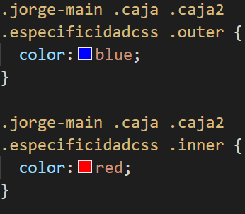

Sintaxis basica de CSS
selector { propiedad: valor; }
Codigo
Los selectores en CSS nos permiten acceder a cualquier elemento o grupo de elementos, para aplicar
estilos sobre el/ellos en una única declaración. Como su nombre indica, permiten seleccionar
aquellos elementos sobre los que se van a aplicar las reglas de estilo.
Dentro del código CSS podemos usar selectores y aplicarles un conjunto de estilos determinado.
Dar colo en CSS
Todo lo que esté aqui
escrito tendrá
un fondo morado.
Codigo
Existen multitud de colores distintos como:black, silver, grey, white, maroon, green, lime, olive,
yellow, navy, red, purple, fuchsia, blue, teal, aqua.
Se pueden colocar de forma hexadecimal.
#008080 codigo RGB
##00FFFF codigo RGB
Clases de CSS
Borde solido de 3 píxeles de grosor y de color rojo.
Además presenta una separación en cada dirección respecto a los bordes dentro de la caja de
40 píxeles, y con un margen superior de 20 píxeles.
Codigo
Las clases hacen referencia a elementos anidados, donde pueden ser especificadas otras secciones o
divs.
En la imagen se ve claramente como en nuestro documento main (todo el cuerpo) le da estructura a
todas las cajas de forma general.
Esto es especialmente útil cuando se tienen multitud de elementos del mismo tipo y se quieren
modificar de forma separada.
Las unidades:
Absolutas: Las unidades absolutas son un tipo de medida fija que no cambia, que no depende de
ningún otro factor. Son ideales para medios no variables como pueden ser los medios impresos, por
ejemplo, pero son poco flexibles y adecuados para la web en la actualidad, ya que no tienen la
capacidad de adaptarse a diferentes resoluciones o pantallas, que es lo que tendemos a hacer
actualmente.em, ex.
Relativas: Las unidades relativas son un tipo de medida más flexible en CSS. Al contrario que
las unidades absolutas, las unidades relativas dependen de algún otro factor (resolución, densidad
de pantalla, etc...).px, pt, pc.
Ángulos: Indican el gradiente y posición angular de las cosas.deg, grad,rad.
Duración: s, ms.
Frecuencia: hz, khz.
Resolución: dpi, dpcm, dppx.
Fuentes de CSS
Indica el nombre de la fuente ("Open Sans") a utilizar. Un tamaño de fuente de 20 píxeles. Indica el estilo de la fuente ("italic"). Indica el grosor de la fuente de 40 píxeles.
Codigo
font-family: Podemos seleccionar seleccionar cualquier tipografía simplemente escribiendo su
nombre.
Si dicho nombre está compuesto por varias palabras separadas por un espacio, se aconseja utilizar
comillas simples para indicarla.
font-size: Otra de las propiedades más utilizadas con las tipografías es font-size, una
tipografía que permite especificar el tamaño que tendrá la fuente que vamos a utilizar.xx-small,
x-small, small, medium, large, x-large, xx-large son ejemplos posibles a utilizar.
font-style: A las tipografías elegidas se les puede aplicar ciertos estilos, muy útil para
maquetar los textos, como por ejemplo negrita o cursiva (italic).
font-weight: Por otro lado, tenemos el peso de la fuente, que no es más que el grosor de la
misma. También depende de la fuente elegida, ya que no todas soportan todos los tipos de grosor.
bolder, lighter son ejemplos posibles a utilizar.
Texto en CSS
Este texto sobre Arnold presenta una serie de modificaciones atendiendo a la estructura de CSS dada a este tramo o caja de nuestra página web.
Codigo
Es posible añadir texto con multitud de modificaciones intrínsecas y en el lugar donde deseemos.
De esta forma conseguiremos dar una personalización, a nuestro gusto, de la parte escrita de nuestro
documento.
Texto real: Este texto sobre Arnold presenta una serie de modificaciones atendiendo a la estructura de CSS dada a este tramo o caja de nuestra página web.
Listas en CSS
- list-style-type: "upper-alpha"
- Arnold
- Schwarzenegger
Codigo
Por defecto, los navegadores muestran los elementos de las listas no ordenadas con una viñeta
formada por un pequeño círculo de color negro. Los elementos de las listas ordenadas se muestran por
defecto con la numeración decimal utilizada en la mayoría de países.
No obstante, CSS define varias propiedades para controlar el tipo de viñeta que muestran las listas,
además de poder controlar la posición de la propia viñeta. La propiedad básica es la que controla el
tipo de viñeta que se muestra y que se denomina list-style-type.
La propiedad list-style-position permite controlar la colocación de las viñetas.
Cuando se requiere personalizar el aspecto de las viñetas, se debe emplear la propiedad
list-style-image, que permite mostrar una imagen propia en vez de una viñeta automática.
Herencia en CSS
En este caso, todo titulo-divs contenido en otra class caja que esté a su vez en el cuerpo
principal de nuestra página web (jorge-main) tendrá esas especificaciones.
Concretamente un tamaño de 44 píxeles, color de texto verde, con estilo italic, subrallado y
con un margen inferior de 16 píxeles.
Codigo
Herencia
Mecanismo que transmite ciertas propiedades a los elementos contenidos.
Cascada
Mecanismo que controla el resultado final cuando se aplican varias declaraciones contrapuestas al mismo elemento.
Modelo de cajas en CSS
El modelo de cajas es el comportamiento de CSS que hace que todos los Listas de las páginas se representen mediante cajas rectangulares.Existen dos propiedades para definir el tamaño de una caja, height y width.
Height definirá la altura y width la anchura.
Aparte de estas existen Margin, Padding y Border que sirven para organizar mejor las cajas.
Margin establece los márgenes para un elemento.
Padding establece el espacio de relleno requerido por todos los lados de un elemento.
Border permite especificar el estilo, el ancho, y el color del borde de un elemento.
Codigo
En una página web, a cada elemento se le puede considerar una caja.
Esta caja está estructurada de la siguiente forma.
Margen: Margin, Padding y Border con los que podemos tener mayor control al momento de
organizar los elementos en un documento HTML.
•margin-top
•margin-right
•margin-bottom
•margin-left
Borde: Ahora hablaremos de la propiedad Border, esta se encuentra entre el margin y el
padding, esta propiedad contiene 3 valores (width, style y color) para poder ser visualizado
correctamente sigamos el siguiente ejemplo.
•border-width
•border-style
•border-color
Contrucción fondos en CSS
SIN DOLOR NO HAY VICTORIA
Siempre que flojees en tus cosas habrá otro en algún lado haciéndolo mucho mejor que tu. Alguien no sabes donde, es más listo que tu, y trabaja duro por esforzarse cada vez más. No hay absolutamente ninguna otra forma de triunfar en la vida si no es por el constante esfuerzo. Ninguna de estas, mis reglas, te funcionará a no ser que te comprometas con la ACCIÓN Para todos el día tiene 24 horas. Así que duerme 6 y aprovecha las 18 horas restantes. Se que algunos me dirán que duermen 8 o 9 horas al día.Bueno, entonces. Duerman más rápido.Codigo
Fondo:
•background-color
•background-image
•background-repeat
•background-attachment
•background-position
Selectores de CSS
Codigo
Enlaces
•:link - normal (antes de ir al enlace por primera vez).
•:visited - visitado (despues de haberlo visitado).
Acción del usuario
•:hover – activado por ratón
•:focus – activado por teclado
•:active – pinchado
Formularios
•:enabled (sin estar marcado).
•:checked (Tras ser marcado).
Posiciones en CSS

Codigo
position static: Normal relative: Relativo a sí mismo absolute: Relativo a su ancestro fixed: Relativo a la ventana Controles top, bottom left, right
Elementos float en CSS
Arnold
La resistencia con la que luchas físicamente en el gimnasio. Y la resistencia con la que
luchas en la vida; solo puede desarrollar un carácter fuerte.
Codigo
La propiedad float establece el esquema de posicionamiento flotante para un elemento. Cuando existe
un elemento flotante, los elementos que se encuentran a continuación del elemento flotante fluyen a
lo largo de él, salvo que haya un elemento que tenga establecido la propiedad clear.
Las propiedades float y clear se pueden aplicar a cualquier elemento de una página web.
Especificidad en CSS
El resto de culturistas están fuera .outer
Solo Arnold está dentro .outer .inner
Codigo
La especificidad es un peso (importancia o valor) que se le asigna a una declaración CSS dada, determinada por el número correspondiente de cada tipo de selector. Cuando varias declaraciones tienen igual especificidad, se aplicará al elemento la última declaración encontrada en el CSS. La especificidad solo se aplica cuando el mismo elemento es objetivo de múltiples declaraciones. Según las reglas de CSS, en caso de que un elemento sea objeto de una declaración directa, esta siempre tendrá preferencia sobre las reglas heredadas de su ancestro.
Media Queries en CSS
Podemos comprobar que en el momento que nuestra pantalla llega a "min-width: 992px", es decir se hace de un tamaño de 992 o inferior, se da una serie de cambios en la composición de toda la estructura de nuestra página web.
Más concretamente se hacen mas pequeñas las imágenes y ademas las classes codigo que estaban a la derecha pasan a estar debajo de los titulos principales.
Codigo
Lo más común es que usemos las Media Queries para detectar las dimensiones de la pantalla.